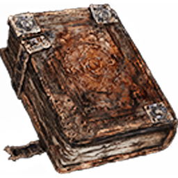

このサイトでは何ができますか？
ナイトレインの遺物効果を検索し、効果が3行ある遺物の組み合わせ候補を確認できます。 神遺物やレア遺物を探す際に、どの効果が同時に付く可能性があるかを調べるためのツールです。

Nightreign Relicナイトレイン非公式ファンツール
ナイトレインの遺物効果、神遺物候補、レア遺物の組み合わせを確認できる非公式の遺物シミュレータです。
Loading relic data...
Nightreign Relic Search
このサイトは、ナイトレインの遺物効果をすばやく確認し、 神遺物やレア遺物の候補を探すための非公式ファンツールです。 効果が3行ある遺物を対象に、欲しい効果の組み合わせを選択して、 入手可能なロール候補を絞り込むことができます。
ナイトレイン遺物検索では、名前やキーワードから効果を探せるだけでなく、 共存できない組み合わせや、効果の位置が存在しない組み合わせを除外して表示します。 神遺物を狙う際の効果確認や、レア遺物の組み合わせ比較に利用できます。
ナイトレインで神おま厳選のように理想効果を追いかけたい場合、 どの効果が同時に付く可能性があるのかを事前に確認することが重要です。 本ツールは、ナイトレイン遺物シミュレータとして、効果1〜3の候補を選びながら 神遺物パターンを探しやすくすることを目的としています。
FAQ
ナイトレインの遺物効果を検索し、効果が3行ある遺物の組み合わせ候補を確認できます。 神遺物やレア遺物を探す際に、どの効果が同時に付く可能性があるかを調べるためのツールです。
このサイトは神遺物を確定で作成するものではありません。 入手可能な効果の組み合わせを確認し、理想に近い遺物を探すためのシミュレータです。
通常遺物、深層遺物、DLCを含む遺物モードを切り替えて検索できます。 The Forsaken Hollow DLCを含む効果を確認する場合は、DLC対応モードを選択してください。
Search Notes
この遺物シミュレーターは、効果が3行ある遺物のみ検索できます。
欲しい3つの効果を選び、次の順序で優先順位を付けてください。
例：キャラクター能力、武器攻撃効果、呪文/祈祷スキルなど、 ユーティリティ、属性、クールダウン、攻撃力アップ＋X、 ダメージ無効化および耐性
もし1行目で何かを選択し、他の2行に欲しいオプションが表示されない場合、 それは共存できない、または効果の位置が存在しないためです。
ナイトレイン深層遺物では、一部の効果がデバフ効果に関連しています。 デバフ効果の欄が表示された場合は、リストから1つ選択する必要があります。 これは3つ目の効果でも同様です。
通常・深層遺物 DLCを含む は、 The Forsaken Hollow DLC を所持しており、ゲームバージョンパッチ v1.02 より上の 遺物効果を確認する場合のみ使用してください。 v1.02 までの遺物には、通常遺物または深層遺物のみを使用してください。